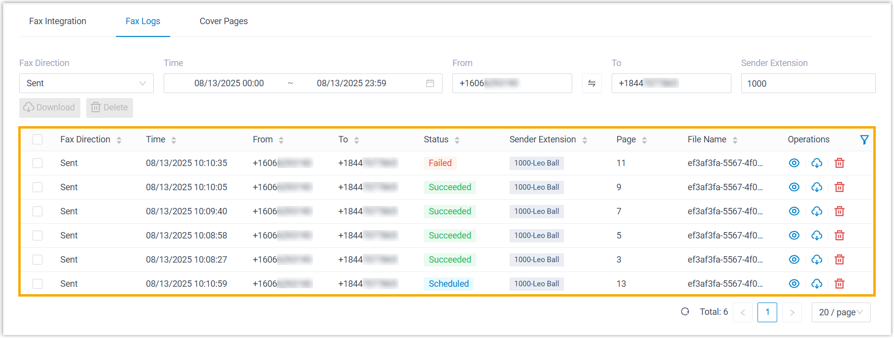

Check Fax Logs
Fax logs allow you to keep track of all online faxes sent and received through Yeastar P-Series Software Edition. This topic describes how to access fax logs and view the details.
Procedure
- Log in to PBX web portal, go to .
- At the top of the list, set filters to locate the fax logs that you want to
view.

Item Description Fax Direction Select Sent or Received to filter sent or received faxes. Time Specify a time range to filter faxes sent or received within the period. From Enter the sender's fax number in E.164 format. To Enter the recipient's fax number in E.164 format. Note: For scheduled outbound faxes with multiple recipients, only the first number displayed in the list will be searched.Sender Extension Enter extension number or extension name to filter faxes sent by a specific user. Note: To narrow down the search result, you can use the column filters in the list.
Result
The matched fax logs are displayed in the list.
